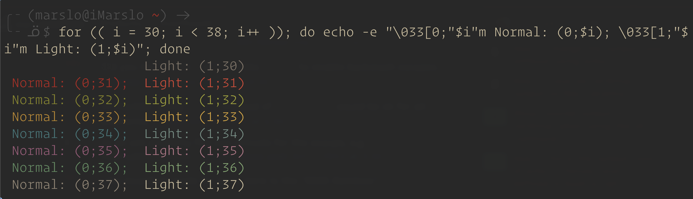
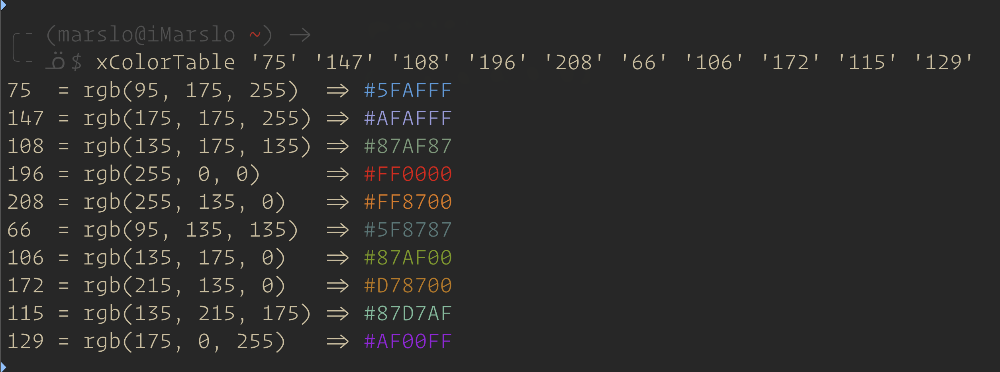
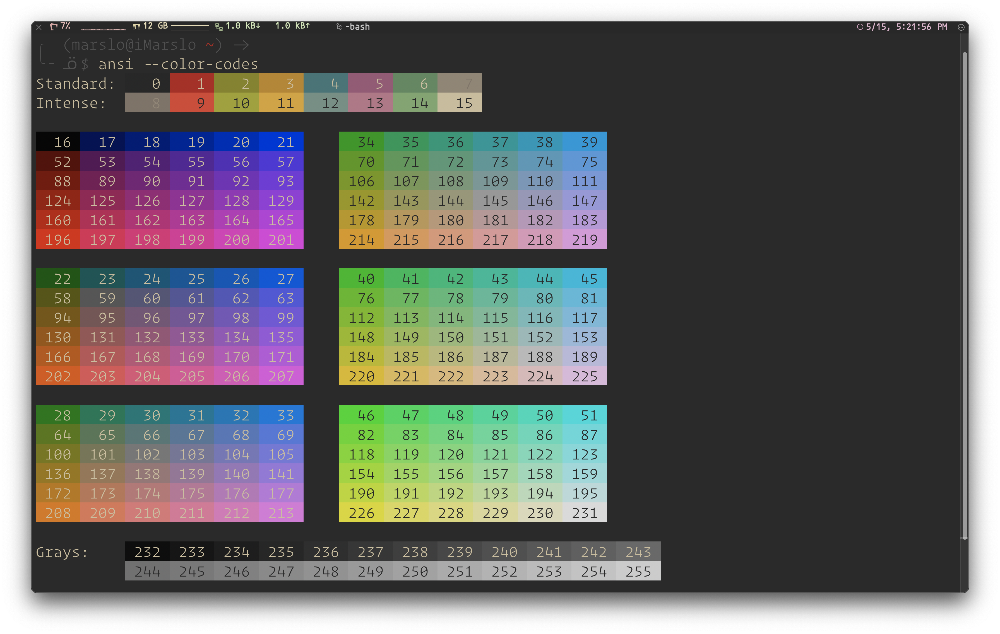
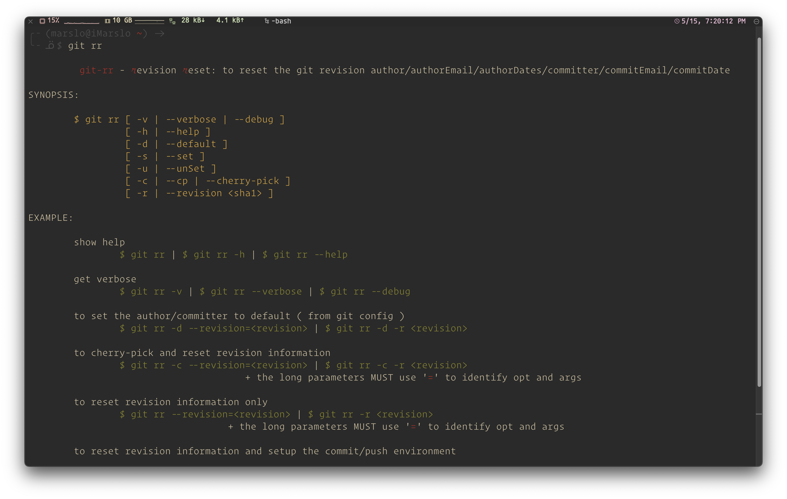
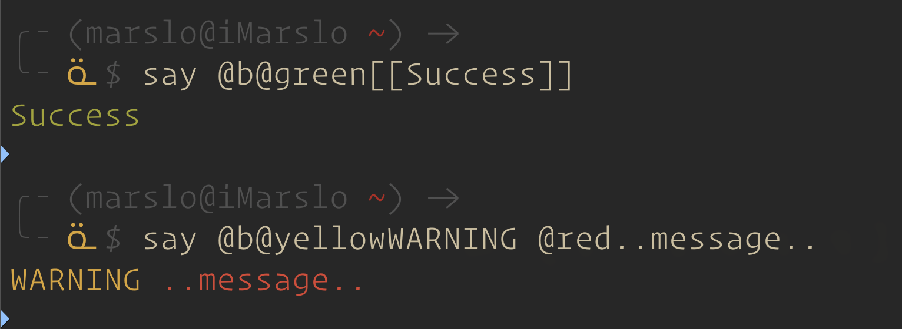
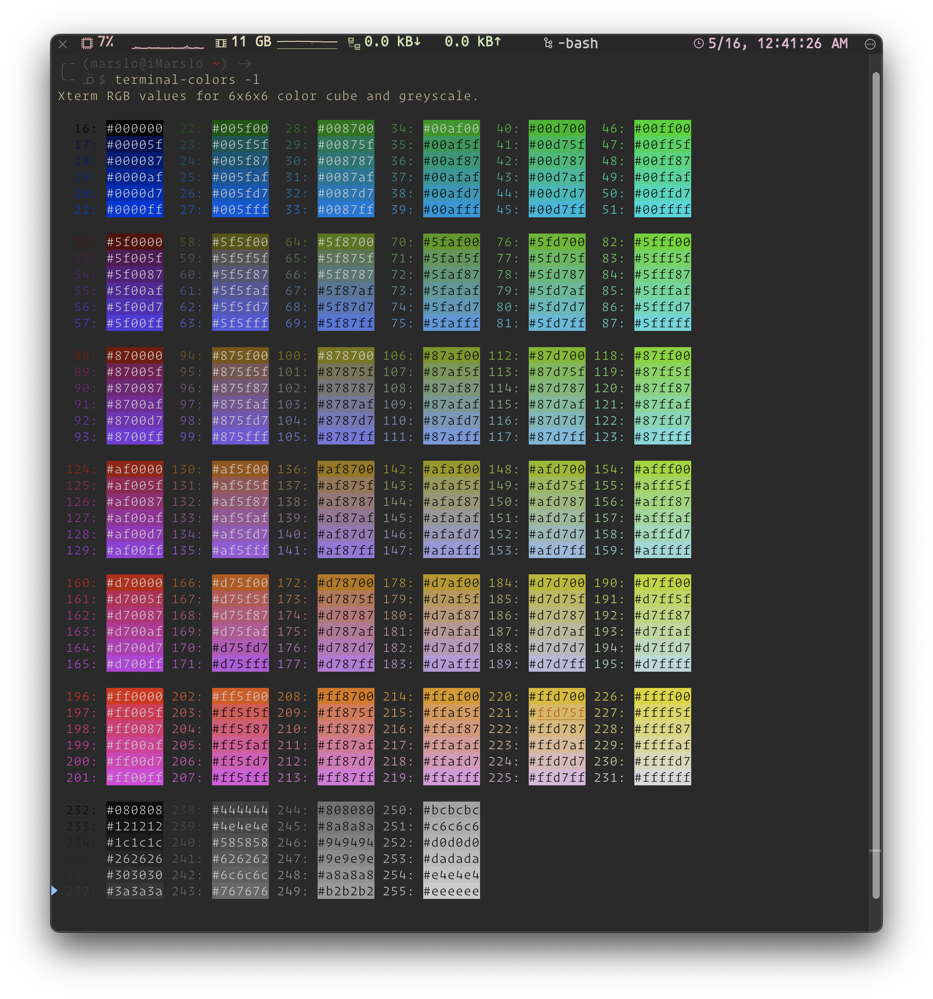
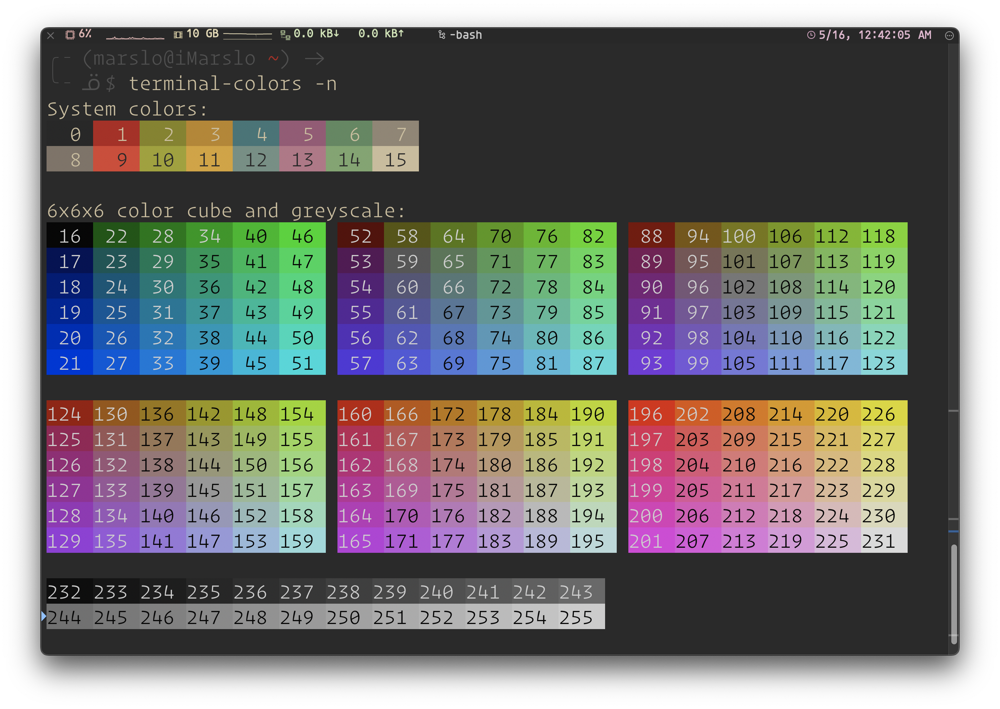
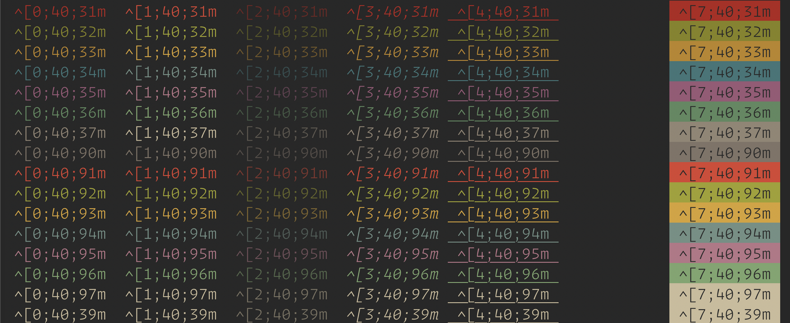
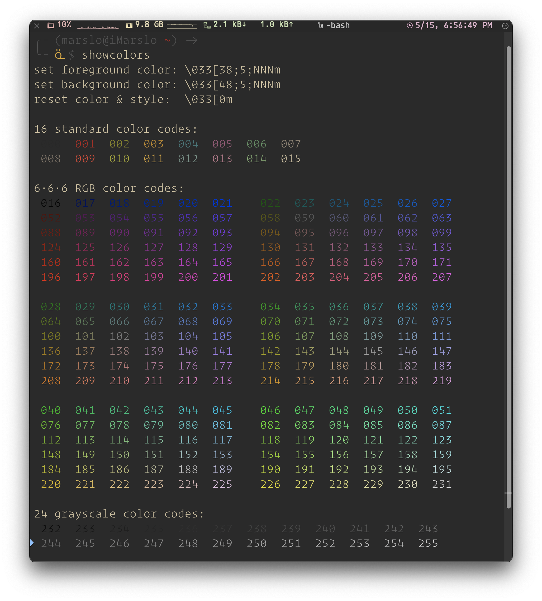

[!TIP]
- * iMarslo : git config colors
foreground colors
┏━━━━━┳━━━━━━━━━━━━━━━━━━━━━━━━━┳━━━━━━━━━━━━━━━━━━━━━━━━━┳━━━━━━━━━━━━━━━━━━━━━━━┓ ┃ ### ┃ GNOME TERMINAL ┃ XTERM ┃ NON-GUI TTY ┃ ┡━━━━━╇━━━━━━━━━━━━━━━━━━━━━━━━━╇━━━━━━━━━━━━━━━━━━━━━━━━━╇━━━━━━━━━━━━━━━━━━━━━━━┩ │ 39 │ «reset this color» │ «reset this color» │ «reset this color» │ ├─────┼─────────────────────────┼─────────────────────────┼───────────────────────┤ │ 30 │ very dark grey │ black │ black │ │ 31 │ dull red │ red │ light red │ │ 32 │ dull green │ light green │ light green │ │ 33 │ dull yellow │ yellow │ yellow │ │ 34 │ greyish blue │ dark blue │ sky blue │ │ 35 │ dull purple │ purple │ purple │ │ 36 │ teal │ cyan │ cyan │ │ 37 │ light grey │ light grey │ light grey │ ├─────┼─────────────────────────┼─────────────────────────┼───────────────────────┤ │ 90 │ dark grey │ dull grey │ dull grey │ │ 91 │ red │ bright red │ bright red │ │ 92 │ lime green │ bright green │ bright green │ │ 93 │ yellow │ bright yellow │ pure yellow │ │ 94 │ light greyish blue │ dull blue │ deep blue │ │ 95 │ light purple │ magenta │ magenta │ │ 96 │ cyan │ bright cyan │ bright cyan │ │ 97 │ off white │ white │ white │ ├─────┴──────┬──────────────────┴─────────────────────────┴───────────────────────┤ │ 38;2;ʀ;ɢ;ʙ │ replace ʀ, ɢ, and ʙ with RGB values from 0 to 255 │ │ │ for closest supported color (non-GUI TTY has only 16 colors!) │ │ 38;5;ɴ │ replace ɴ with value from 256-color chart below │ │ │ for closest supported color (non-GUI TTY has only 16 colors!) │ └────────────┴────────────────────────────────────────────────────────────────────┘background colors
┏━━━━━┳━━━━━━━━━━━━━━━━━━━━━━━━━┳━━━━━━━━━━━━━━━━━━━━━━━━━┳━━━━━━━━━━━━━━━━━━━━━━━┓ ┃ ### ┃ GNOME TERMINAL ┃ XTERM ┃ NON-GUI TTY ┃ ┡━━━━━╇━━━━━━━━━━━━━━━━━━━━━━━━━╇━━━━━━━━━━━━━━━━━━━━━━━━━╇━━━━━━━━━━━━━━━━━━━━━━━┩ │ 49 │ «reset this color» │ «reset this color» │ «reset this color» │ ├─────┼─────────────────────────┼─────────────────────────┼───────────────────────┤ │ 40 │ very dark grey │ black │ black │ │ 41 │ dull red │ red │ light red │ │ 42 │ dull green │ light green │ light green │ │ 43 │ dull yellow │ yellow │ yellow │ │ 44 │ greyish blue │ dark blue │ sky blue │ │ 45 │ dull purple │ purple │ purple │ │ 46 │ teal │ cyan │ cyan │ │ 47 │ light grey │ light grey │ light grey │ ├─────┼─────────────────────────┼─────────────────────────┼╶╴╶╴╶╴╶╴╶╴╶╴╶╴╶╴╶╴╶╴╶╴╶┤ │ 100 │ dark grey │ dull grey │ black │ │ 101 │ red │ bright red │ light red │ │ 102 │ lime green │ bright green │ light green │ │ 103 │ yellow │ bright yellow │ yellow │ │ 104 │ light greyish blue │ dull blue │ sky blue │ │ 105 │ light purple │ magenta │ purple │ │ 106 │ cyan │ bright cyan │ cyan │ │ 107 │ off white │ white │ light grey │ ├─────┴──────┬──────────────────┴─────────────────────────┴───────────────────────┤ │ 48;2;ʀ;ɢ;ʙ │ replace ʀ, ɢ, and ʙ with RGB values from 0 to 255 │ │ │ for closest supported color (non-GUI TTY has only 8 colors!) │ │ 48;5;ɴ │ replace ɴ with value from 256-color chart below │ │ │ for closest supported color (non-GUI TTY has only 8 colors!) │ └────────────┴────────────────────────────────────────────────────────────────────┘text styling
┏━━━━━┳━━━━━━━━━━━━━━━━━━━━━━━━━┳━━━━━━━━━━━━━━━━━━━━━━━━━┳━━━━━━━━━━━━━━━━━━━━━━━┓ ┃ ### ┃ GNOME TERMINAL ┃ XTERM ┃ NON-GUI TTY ┃ ┡━━━━━╇━━━━━━━━━━━━━━━━━━━━━━━━━╇━━━━━━━━━━━━━━━━━━━━━━━━━╇━━━━━━━━━━━━━━━━━━━━━━━┩ │ │ «reset style+colors» │ «reset style+colors» │ «reset style+colors» │ │ 0 │ «reset style+colors» │ «reset style+colors» │ «reset style+colors» │ ├─────┼─────────────────────────┼─────────────────────────┼───────────────────────┤ │ 1 │ +bold, +brighter color │ +bold, +brighter color │ +brighter color, │ │ │ │ │ -forced grey │ │ 2 │ +fainter color │ +fainter color │ +forced grey │ │ 3 │ +italic │ +italic │ +forced green │ │ │ │ │ ● overrides 2 and 4 │ │ 4 │ +underline │ +underline │ +forced cyan │ │ │ │ │ ● overrides 2 │ │ 5 │ «no effect» │ +blink │ «no effect» │ │ 7 │ +invert colors │ +invert colors │ +invert colors │ │ 8 │ +invisible │ +invisible │ «no effect» │ │ │ │ ● underline appears │ │ │ 9 │ +strikethrough │ +strikethrough │ «no effect» │ ├─────┼─────────────────────────┤ ├───────────────────────┤ │ 21 │ -bold, -brighter color, │ +double underline │ -brighter color, │ │ │ -fainter color ├─────────────────────────┤ -forced grey │ │ 22 │ -bold, -brighter color, │ -bold, -brighter color, │ -brighter color, │ │ │ -fainter color │ -fainter color │ -forced grey │ │ 23 │ -italic │ -italic │ -forced green │ │ 24 │ -underline │ -underline, │ -forced cyan │ │ │ │ -double underline │ │ │ 25 │ «no effect» │ -blink │ «no effect» │ │ 27 │ -invert colors │ -invert colors │ -invert colors │ │ 28 │ -invisible │ -invisible │ «no effect» │ │ 29 │ -strikethrough │ -strikethrough │ «no effect» │ └─────┴─────────────────────────┴─────────────────────────┴───────────────────────┘┏━━━━━━━━━┳━━━━━━━━━━━━━━━━━━━━━━━━━━━━━━┳━━━━━━━━━━━━━━━━━━━━━━━━━━━━━━━━━━━━━━━━━━━━━━━━━━━━━━━━━━━━━━━━━━━━━━━━┓ ┃ Code ┃ Effect ┃ Note ┃ ┡━━━━━━━━━╇━━━━━━━━━━━━━━━━━━━━━━━━━━━━━━╇━━━━━━━━━━━━━━━━━━━━━━━━━━━━━━━━━━━━━━━━━━━━━━━━━━━━━━━━━━━━━━━━━━━━━━━━┩ │ 0 │ Reset / Normal │ all attributes off │ │ 1 │ Bold or increased intensity │ │ │ 2 │ Faint (decreased intensity) │ Not widely supported. │ │ 3 │ Italic │ Not widely supported. Sometimes treated as inverse. │ │ 4 │ Underline │ │ │ 5 │ Slow Blink │ less than 150 per minute │ │ 6 │ Rapid Blink │ MS-DOS ANSI.SYS; 150+ per minute; not widely supported │ │ 7 │ [[reverse video]] │ swap foreground and background colors │ │ 8 │ Conceal │ Not widely supported. │ │ 9 │ Crossed-out │ Characters legible, but marked for deletion. Not widely supported. │ │ 10 │ Primary(default) font │ │ │ 11–19 │ Alternate font │ Select alternate font n-10 │ │ 20 │ Fraktur │ hardly ever supported │ │ 21 │ Bold off or Double Underline │ Bold off not widely supported; double underline hardly ever supported. │ │ 22 │ Normal color or intensity │ Neither bold nor faint │ │ 23 │ Not italic, not Fraktur │ │ │ 24 │ Underline off │ Not singly or doubly underlined │ │ 25 │ Blink off │ │ │ 27 │ Inverse off │ │ │ 28 │ Reveal │ conceal off │ │ 29 │ Not crossed out │ │ │ 30–37 │ Set foreground color │ See color table below │ │ 38 │ Set foreground color │ Next arguments are 5;<n> or 2;<r>;<g>;<b>, see below │ │ 39 │ Default foreground color │ implementation defined (according to standard) │ │ 40–47 │ Set background color │ See color table below │ │ 48 │ Set background color │ Next arguments are 5;<n> or 2;<r>;<g>;<b>, see below │ │ 49 │ Default background color │ implementation defined (according to standard) │ │ 51 │ Framed │ │ │ 52 │ Encircled │ │ │ 53 │ Overlined │ │ │ 54 │ Not framed or encircled │ │ │ 55 │ Not overlined │ │ │ 60 │ ideogram underline │ hardly ever supported │ │ 61 │ ideogram double underline │ hardly ever supported │ │ 62 │ ideogram overline │ hardly ever supported │ │ 63 │ ideogram double overline │ hardly ever supported │ │ 64 │ ideogram stress marking │ hardly ever supported │ │ 65 │ ideogram attributes off │ reset the effects of all of 60-64 │ │ 90–97 │ Set bright foreground color │ aixterm (not in standard) │ │ 100–107 │ Set bright background color │ │ └─────────┴──────────────────────────────┴────────────────────────────────────────────────────────────────────────┘quick show colors:
$ for i in {0..255}; do echo -e "\033[38;5;${i}m $i \033[0m"; done
tools and basic grammar
[!NOTE|label:references:]
- escape sequence
| BASH | HEX | OCTAL | NOTE | |
|---|---|---|---|---|
| start | \e |
\x1b |
\033 |
|
| start | \E |
\x1B |
- | x cannot be capital |
| end | \e[0m |
\x1b[0m |
\033[0m |
|
| end | \e[m |
\x1b[m |
\033[m |
0 is appended if you omit it |
-
$ for (( i = 30; i < 38; i++ )); do echo -e "\033[0;"$i"m Normal: (0;$i); \033[1;"$i"m Light: (1;$i)"; done 1.2.8.1 -- normal & bright colors
{kind=link}
from rgb
[!NOTE|label:references:]
rgb to hex
# @author : Anthony Bourdain | https://stackoverflow.com/a/55073732/2940319 # @usage : # - `rgbtohex 17 0 26` ==> 1001A # - `rgbtohex -h 17 0 26` ==> #1001A function rgbtohex () { addleadingzero () { awk '{if(length($0)<2){printf "0";} print $0;}';} if [[ ${1} == "-h" ]]; then r=${2}; g=${3}; b=${4};h='#'; else r=${1}; g=${2}; b=${3};h=''; fi r=$(echo "obase=16; ${r}" | bc | addleadingzero) g=$(echo "obase=16; ${g}" | bc | addleadingzero) b=$(echo "obase=16; ${b}" | bc | addleadingzero) echo "${h}${r}${g}${b}" }rgb to 256colors
# @author : Anthony Bourdain | https://stackoverflow.com/a/55073732/2940319 # @usage : # - `rgbto256 0 95, 135` ==> 22 function rgbto256 () { echo "define trunc(x){auto os;os=scale;scale=0;x/=1;scale=os;return x;};" \ "16 + 36 * trunc(${1}/51) + 6 * trunc(${2}/51) +" \ " trunc(${3}/51)" | bc # XTerm Color Number = 16 + 36 * R + 6 * G + B | 0 <= R,G,B <= 5 }
from 256 colors
-
$ xColorTable 30 45 100 30 = rgb(0, 135, 135) => #008787 45 = rgb(0, 215, 255) => #00D7FF 100 = rgb(135, 135, 0) => #878700 1.2.8.2 -- xColorTable 256color to hex
tohex(){ dec=$(($1%256)) ### input must be a number in range 0-255. if [ "$dec" -lt "16" ]; then bas=$(( dec%16 )) mul=128 [ "$bas" -eq "7" ] && mul=192 [ "$bas" -eq "8" ] && bas=7 [ "$bas" -gt "8" ] && mul=255 a="$(( (bas&1) *mul ))" b="$(( ((bas&2)>>1)*mul ))" c="$(( ((bas&4)>>2)*mul ))" printf 'dec= %3s basic= #%02x%02x%02x\n' "$dec" "$a" "$b" "$c" elif [ "$dec" -gt 15 ] && [ "$dec" -lt 232 ]; then b=$(( (dec-16)%6 )); b=$(( b==0?0: b*40 + 55 )) g=$(( (dec-16)/6%6)); g=$(( g==0?0: g*40 + 55 )) r=$(( (dec-16)/36 )); r=$(( r==0?0: r*40 + 55 )) printf 'dec= %3s color= #%02x%02x%02x\n' "$dec" "$r" "$g" "$b" else gray=$(( (dec-232)*10+8 )) printf 'dec= %3s gray= #%02x%02x%02x\n' "$dec" "$gray" "$gray" "$gray" fi } for i in $(seq 0 255); do tohex ${i} done
{kind=link}
from hex
-
fromhex(){ hex=${1#"#"} r=$(printf '0x%0.2s' "$hex") g=$(printf '0x%0.2s' ${hex#??}) b=$(printf '0x%0.2s' ${hex#????}) printf '%03d' "$(( (r<75?0:(r-35)/40)*6*6 + (g<75?0:(g-35)/40)*6 + (b<75?0:(b-35)/40) + 16 ))" } # verify $ xColorTable 30 30 = rgb(0, 135, 135) => #008787 $ fromhex 008787 030 $ fromhex 008766 029 $ fromhex 008788 030 hex to rgb
# @author : Anthony Bourdain | https://stackoverflow.com/a/55073732/2940319 # @usage : # - `hexttorgb "11001A" ==> 17 0 26 # - `hexttorgb "#11001A" ==> 17 0 26 function hextorgb () { hexinput=$(echo "${1}" | tr '[:lower:]' '[:upper:]') # uppercase-ing hexinput=$(echo "${hexinput}" | tr -d '#') # remove Hash if needed a=$(echo "${hexinput}" | cut -c-2) b=$(echo "${hexinput}" | cut -c3-4) c=$(echo "${hexinput}" | cut -c5-6) r=$(echo "ibase=16; ${a}" | bc) g=$(echo "ibase=16; ${b}" | bc) b=$(echo "ibase=16; ${c}" | bc) echo "${r} ${g} ${b}" }
ansi colors
[!NOTE|label:references:]
xterm color code
echo
# 0 - 255 # v $ echo -e "\033[38;5;3mhello world\033[0m" # for all $ for i in {0..255}; do echo -e "\033[38;5;${i}m $i \033[0m"; doneprintf
# ╭─ \b Write a <backspace> character. # ╷ 0 - 255 # v v $ printf "%-10b" "\e[38;5;3m**text**\e[0m" # or ignore `%b` $ printf "\e[38;5;3m**text**\e[0m"tput[!NOTE|label:references::]
# 0 - 255 reset # v v $ tput setaf 30; echo "hello world"; tput sgr0 # or $ echo -e "$(tput setaf 30)hello world$(tput sgr0)" # more $ tput setaf 30 | command cat -A ^[[38;5;30m-
$ echo $(tput setab 214)256 $(tput setab 202)colors -
$ for c in {0..255}; do tput setaf $c; tput setaf $c | command cat -v; echo =$c; done -
$ tput colors 256
-
RGB colors
[!NOTE|label:references:]
echo
# #689d6a # ╭─ R(decimal) : 104 : `$ echo -n "obase=10;ibase=16; 68" | bc` # ╷ ╭─ G(decimal) : 157 : `$ echo -n "obase=10;ibase=16; 9D" | bc` # ╷ ╷ ╭─ B(decimal) : 106 : `$ echo -n "obase=10;ibase=16; 6A" | bc` # --- --- --- $ echo -e '\x1b[3;38;2;104;157;106m hello world \x1b[m' # - --- --- --- # ╵ 68 9D 6A # ╰─ SGR (Select Graphic Rendition) parameters ( https://en.wikipedia.org/wiki/ANSI_escape_code ): # 0 reset/normal ; 1 bold ; 2 dim/faint ; # 3 italic ; 4 underline ; 5 blink ; # 7 reverse ; 8 hidden # or $ echo $(git config --get-color "" "#689d6a italic") color test $(git config --get-color "" reset) | command cat -A ^[[3;38;2;104;157;106m color test ^[[m$ # --- --- --- # 68 9D 6A : hex # 104 157 106 : decimalprintf
$ hextorgb '#6A5ACD' 106 90 205 # 6A 5A CD # --- -- --- $ printf "%b" '\x1b[38;2;106;90;205m-hello world-\x1b[0m' # omit %b $ printf '\x1b[38;2;106;90;205m-hello world-\x1b[0m'for PS1
[!NOTE|label:references:]
# additioanl \[ and \] for PS1 only # ^ ^ # -- -- R='\[\e[38;2;255;100;100m\]' G='\[\e[38;2;100;255;100m\]' B='\[\e[38;2;100;100;255m\]' W='\[\e[0m\]' PS1="[$R\u$W@$B\h$W:$G\w$W]\$ "RGB for both foreground and background
# 38;2;R;G;B # 48;2;R;G;B $ echo -e "\033[38;2;255;100;100mhello world\033[0m" $ echo -e "\033[48;2;255;100;100mhello world\033[0m" # 38;2;R;G;B 48;2;R;G;B # v------------v v-------------v $ echo -e "\033[38;2;155;106;0;48;2;255;100;100mhello world\033[0m" # https://web.archive.org/web/20131009193526/http://bitmote.com/index.php?post/2012/11/19/Using-ANSI-Color-Codes-to-Colorize-Your-Bash-Prompt-on-Linux $ echo -e "testing \033[38;5;196;48;5;21mCOLOR1\033[38;5;208;48;5;159mCOLOR2\033[m"
tools
-
# install $ [[ ! -f /opt/ansi ]] && curl -sL git.io/ansi -o /opt/ansi $ chmod +x /opt/ansi $ ln -sf /opt/ansi /usr/local/bin/ansi # usage $ ansi --color-table $ ansi --color-codes 1.2.8.3 -- ansi color codes -
# install $ curl -o /opt/bash-colors.sh -fsSL https://github.com/ppo/bash-colors/blob/master/bash-colors.sh $ echo "[[ -f \"/opt/bash-colors.sh\" ]] && source \"/opt/bash-colors.sh\" >> ~/.bashrc" # or using source code directly # shellcheck disable=SC2015,SC2059 c() { [ $# == 0 ] && printf "\e[0m" || printf "$1" | sed 's/\(.\)/\1;/g;s/\([SDIUFNHT]\)/2\1/g;s/\([KRGYBMCW]\)/3\1/g;s/\([krgybmcw]\)/4\1/g;y/SDIUFNHTsdiufnhtKRGYBMCWkrgybmcw/12345789123457890123456701234567/;s/^\(.*\);$/\\e[\1m/g'; } # shellcheck disable=SC2086 cecho() { echo -e "$(c $1)${2}\e[0m"; } # sample $ echo -e "$(c Gs)bold green$(c) and $(c i)Italic$(c) and normal" 1.2.8.4 -- bash-colors c() for help info -
say() { echo "$@" | sed \ -e "s/\(\(@\(red\|green\|yellow\|blue\|magenta\|cyan\|white\|reset\|b\|u\)\)\+\)[[]\{2\}\(.*\)[]]\{2\}/\1\4@reset/g" \ -e "s/@red/$(tput setaf 1)/g" \ -e "s/@green/$(tput setaf 2)/g" \ -e "s/@yellow/$(tput setaf 3)/g" \ -e "s/@blue/$(tput setaf 4)/g" \ -e "s/@magenta/$(tput setaf 5)/g" \ -e "s/@cyan/$(tput setaf 6)/g" \ -e "s/@white/$(tput setaf 7)/g" \ -e "s/@reset/$(tput sgr0)/g" \ -e "s/@b/$(tput bold)/g" \ -e "s/@u/$(tput sgr 0 1)/g" } # example $ say @b@green[[Success]] $ say @b@yellowWARNING @red..message.. 1.2.8.5 -- say() -
function RGBcolor { echo "16 + $1 * 36 + $2 * 6 + $3" | bc } fg=$(RGBcolor 1 0 2) # Violet bg=$(RGBcolor 5 3 0) # Bright orange. echo -e "\\033[1;38;5;$fg;48;5;${bg}mviolet on tangerine\\033[0m" terminal-colors | eikenb/terminal-colors
$ python3 -m pip install terminal-colors # usage $ terminal-colors -l $ terminal-colors -n $ terminal-colors -n -p 1.2.8.6 -- terminal-colors -l  1.2.8.7 -- terminal-colors -n -
# install $ python3 -m pip install colored # usage $ colored --help $ colored --color-codes
{kind=link}
{kind=link}
{kind=link}
256 color table
[!NOTE|label:references:]
256 colors
function 256colors() { local bar='█' # ctrl+v -> u2588 ( full block ) if uname -r | grep -q "microsoft"; then bar='▌'; fi # ctrl+v -> u258c ( left half block ) for i in {0..255}; do echo -e "\e[38;05;${i}m${bar}${i}"; done | column -c 180 -s ' '; echo -e "\e[m" }
1.2.8.8 -- 256 colors #!/bin/bash # This program is free software. It comes without any warranty, to # the extent permitted by applicable law. You can redistribute it # and/or modify it under the terms of the Do What The Fuck You Want # To Public License, Version 2, as published by Sam Hocevar. See # http://sam.zoy.org/wtfpl/COPYING for more details. for fgbg in 38 48 ; do # Foreground / Background for color in {0..255} ; do # Colors # Display the color printf "\e[${fgbg};5;%sm %3s \e[0m" $color $color # Display 6 colors per lines if [ $((($color + 1) % 6)) == 4 ] ; then echo # New line fi done echo # New line done exit 0
1.2.8.9 -- 256 colors -
reference:
#!/bin/sh # From: https://misc.flogisoft.com/bash/tip_colors_and_formatting#colors2 # Modified by steve.tarver@gmail.com to work in Alpine Linux ash # This program is free software. It comes without any warranty, to # the extent permitted by applicable law. You can redistribute it # and/or modify it under the terms of the Do What The Fuck You Want # To Public License, Version 2, as published by Sam Hocevar. See # http://sam.zoy.org/wtfpl/COPYING for more details. for clbg in {40..47} {100..107} 49 ; do # background for clfg in {30..37} {90..97} 39 ; do # foreground for attr in 0 1 2 3 4 5 7 ; do # formatting #Print the result echo -en "\e[${attr};${clbg};${clfg}m ^[${attr};${clbg};${clfg}m \e[0m" done echo # newline done done exit 0 1.2.8.10 -- colors & formatting for attr in 0 1 2 3 4 5 6 7; do echo "------------------------------------------------" printf "ESC[%s;Foreground;Background - \n" $attr for fore in 30 31 32 33 34 35 36 37; do for back in 40 41 42 43 44 45 46 47; do printf '\033[%s;%s;%sm %02s;%02s\033[0m' $attr $fore $back $fore $back done printf '\n' done printf '\033[0m' done
1.2.8.11 -- colors & formatting -
# @author : https://stackoverflow.com/a/69648792/2940319 # @usage : # - `showcolors fg` : default # - `showcolors bg` # @alternative: `ansi --color-codes` function showcolors() { local row col blockrow blockcol red green blue local showcolor=_showcolor_${1:-fg} local white="\033[1;37m" local reset="\033[0m" echo -e "set foreground color: \\\\033[38;5;${white}NNN${reset}m" echo -e "set background color: \\\\033[48;5;${white}NNN${reset}m" echo -e "reset color & style: \\\\033[0m" echo echo 16 standard color codes: for row in {0..1}; do for col in {0..7}; do $showcolor $(( row*8 + col )) "${row}" done echo done echo echo 6·6·6 RGB color codes: for blockrow in {0..2}; do for red in {0..5}; do for blockcol in {0..1}; do green=$(( blockrow*2 + blockcol )) for blue in {0..5}; do $showcolor $(( red*36 + green*6 + blue + 16 )) $green done echo -n " " done echo done echo done echo 24 grayscale color codes: for row in {0..1}; do for col in {0..11}; do $showcolor $(( row*12 + col + 232 )) "${row}" done echo done echo } function _showcolor_fg() { # shellcheck disable=SC2155 local code=$( printf %03d "$1" ) echo -ne "\033[38;5;${code}m" echo -nE " $code " echo -ne "\033[0m" } function _showcolor_bg() { if (( $2 % 2 == 0 )); then echo -ne "\033[1;37m" else echo -ne "\033[0;30m" fi # shellcheck disable=SC2155 local code=$( printf %03d "$1" ) echo -ne "\033[48;5;${code}m" echo -nE " $code " echo -ne "\033[0m" } 1.2.8.12 -- showcolors -
function colorgrid() { iter=16 while [ $iter -lt 52 ] do second=$[$iter+36] third=$[$second+36] four=$[$third+36] five=$[$four+36] six=$[$five+36] seven=$[$six+36] if [ $seven -gt 250 ];then seven=$[$seven-251]; fi echo -en "\033[38;5;$(echo $iter)m█ " printf "%03d" $iter echo -en " \033[38;5;$(echo $second)m█ " printf "%03d" $second echo -en " \033[38;5;$(echo $third)m█ " printf "%03d" $third echo -en " \033[38;5;$(echo $four)m█ " printf "%03d" $four echo -en " \033[38;5;$(echo $five)m█ " printf "%03d" $five echo -en " \033[38;5;$(echo $six)m█ " printf "%03d" $six echo -en " \033[38;5;$(echo $seven)m█ " printf "%03d" $seven iter=$[$iter+1] printf '\r\n' done } solarized color
#!/bin/bash # solarized ansicolors (exporting for grins) export base03='\033[0;30;40m' export base02='\033[1;30;40m' export base01='\033[0;32;40m' export base00='\033[0;33;40m' export base0='\033[0;34;40m' export base1='\033[0;36;40m' export base2='\033[0;37;40m' export base3='\033[1;37;40m' export yellow='\033[1;33;40m' export orange='\033[0;31;40m' export red='\033[1;31;40m' export magenta='\033[1;35;40m' export violet='\033[0;35;40m' export blue='\033[1;34;40m' export cyan='\033[1;36;40m' export green='\033[1;32;40m' export reset='\033[0m' colors () { echo -e "base03 ${base03}Test$reset" echo -e "base02 ${base02}Test$reset" echo -e "base01 ${base01}Test$reset" echo -e "base00 ${base00}Test$reset" echo -e "base0 ${base0}Test$reset" echo -e "base1 ${base1}Test$reset" echo -e "base2 ${base2}Test$reset" echo -e "base3 ${base3}Test$reset" echo -e "yellow ${yellow}Test$reset" echo -e "orange ${orange}Test$reset" echo -e "red ${red}Test$reset" echo -e "magenta ${magenta}Test$reset" echo -e "violet ${violet}Test$reset" echo -e "blue ${blue}Test$reset" echo -e "cyan ${cyan}Test$reset" echo -e "green ${green}Test$reset" } colors
1.2.8.13 -- solarized colors
{kind=link}
{kind=link}
color names
[!TIP|label:references:]
blue

1.2.8.14 -- blue brown

1.2.8.15 -- brown cyan

1.2.8.16 -- cyan gray.black

1.2.8.17 -- gray.black green

1.2.8.18 -- green orange

1.2.8.19 -- orange pink

1.2.8.20 -- pink purple.magenta

1.2.8.21 -- purple.magenta red

1.2.8.22 -- red white

1.2.8.23 -- white yellow

1.2.8.24 -- yellow
xterm 256 colors chart
[!NOTE|label:references:]


256 colors cheat sheet
| XTERM NUMBER | XTERM NAME | HEX | RGB | HSL | ANSI COLOR CODE |
|---|---|---|---|---|---|
| 0 | black Black (SYSTEM) |
#000000 |
rgb(0,0,0) | hsl(0,0%,0%) | \e[38;5;0m |
| 1 | red Maroon (SYSTEM) |
#800000 |
rgb(128,0,0) | hsl(0,100%,25%) | \e[38;5;1m |
| 2 | green Green (SYSTEM) |
#008000 |
rgb(0,128,0) | hsl(120,100%,25%) | \e[38;5;2m |
| 3 | yellow Olive (SYSTEM) |
#808000 |
rgb(128,128,0) | hsl(60,100%,25%) | \e[38;5;3m |
| 4 | blue Navy (SYSTEM) |
#000080 |
rgb(0,0,128) | hsl(240,100%,25%) | \e[38;5;4m |
| 5 | magenta Purple (SYSTEM) |
#800080 |
rgb(128,0,128) | hsl(300,100%,25%) | \e[38;5;5m |
| 6 | cyan Teal (SYSTEM) |
#008080 |
rgb(0,128,128) | hsl(180,100%,25%) | \e[38;5;6m |
| 7 | light_gray Silver (SYSTEM) |
#c0c0c0 |
rgb(192,192,192) | hsl(0,0%,75%) | \e[38;5;7m |
| 8 | dark_gray Grey (SYSTEM) |
#808080 |
rgb(128,128,128) | hsl(0,0%,50%) | \e[38;5;8m |
| 9 | light_red Red (SYSTEM) |
#ff0000 |
rgb(255,0,0) | hsl(0,100%,50%) | \e[38;5;9m |
| 10 | light_green Lime (SYSTEM) |
#00ff00 |
rgb(0,255,0) | hsl(120,100%,50%) | \e[38;5;10m |
| 11 | light_yellow Yellow (SYSTEM) |
#ffff00 |
rgb(255,255,0) | hsl(60,100%,50%) | \e[38;5;11m |
| 12 | light_blue Blue (SYSTEM) |
#0000ff |
rgb(0,0,255) | hsl(240,100%,50%) | \e[38;5;12m |
| 13 | light_magenta Fuchsia (SYSTEM) |
#ff00ff |
rgb(255,0,255) | hsl(300,100%,50%) | \e[38;5;13m |
| 14 | light_cyan Aqua (SYSTEM) |
#00ffff |
rgb(0,255,255) | hsl(180,100%,50%) | \e[38;5;14m |
| 15 | white White (SYSTEM) |
#ffffff |
rgb(255,255,255) | hsl(0,0%,100%) | \e[38;5;15m |
| 16 | grey_0 Grey0 |
#000000 |
rgb(0,0,0) | hsl(0,0%,0%) | \e[38;5;16m |
| 17 | navy_blue NavyBlue |
#00005f |
rgb(0,0,95) | hsl(240,100%,18%) | \e[38;5;17m |
| 18 | dark_blue DarkBlue |
#000087 |
rgb(0,0,135) | hsl(240,100%,26%) | \e[38;5;18m |
| 19 | blue_3a Blue3 |
#0000af |
rgb(0,0,175) | hsl(240,100%,34%) | \e[38;5;19m |
| 20 | blue_3b Blue3 |
#0000d7 |
rgb(0,0,215) | hsl(240,100%,42%) | \e[38;5;20m |
| 21 | blue_1 Blue1 |
#0000ff |
rgb(0,0,255) | hsl(240,100%,50%) | \e[38;5;21m |
| 22 | dark_green DarkGreen |
#005f00 |
rgb(0,95,0) | hsl(120,100%,18%) | \e[38;5;22m |
| 23 | deep_sky_blue_4a DeepSkyBlue4 |
#005f5f |
rgb(0,95,95) | hsl(180,100%,18%) | \e[38;5;23m |
| 24 | deep_sky_blue_4b DeepSkyBlue4 |
#005f87 |
rgb(0,95,135) | hsl(97,100%,26%) | \e[38;5;24m |
| 25 | deep_sky_blue_4c DeepSkyBlue4 |
#005faf |
rgb(0,95,175) | hsl(07,100%,34%) | \e[38;5;25m |
| 26 | dodger_blue_3 DodgerBlue3 |
#005fd7 |
rgb(0,95,215) | hsl(13,100%,42%) | \e[38;5;26m |
| 27 | dodger_blue_2 DodgerBlue2 |
#005fff |
rgb(0,95,255) | hsl(17,100%,50%) | \e[38;5;27m |
| 28 | green_4 Green4 |
#008700 |
rgb(0,135,0) | hsl(120,100%,26%) | \e[38;5;28m |
| 29 | spring_green_4 SpringGreen4 |
#00875f |
rgb(0,135,95) | hsl(62,100%,26%) | \e[38;5;29m |
| 30 | turquoise_4 Turquoise4 |
#008787 |
rgb(0,135,135) | hsl(180,100%,26%) | \e[38;5;30m |
| 31 | deep_sky_blue_3a DeepSkyBlue3 |
#0087af |
rgb(0,135,175) | hsl(93,100%,34%) | \e[38;5;31m |
| 32 | deep_sky_blue_3b DeepSkyBlue3 |
#0087d7 |
rgb(0,135,215) | hsl(02,100%,42%) | \e[38;5;32m |
| 33 | dodger_blue_1 DodgerBlue1 |
#0087ff |
rgb(0,135,255) | hsl(08,100%,50%) | \e[38;5;33m |
| 34 | green_3a Green3 |
#00af00 |
rgb(0,175,0) | hsl(120,100%,34%) | \e[38;5;34m |
| 35 | spring_green_3a SpringGreen3 |
#00af5f |
rgb(0,175,95) | hsl(52,100%,34%) | \e[38;5;35m |
| 36 | dark_cyan DarkCyan |
#00af87 |
rgb(0,175,135) | hsl(66,100%,34%) | \e[38;5;36m |
| 37 | light_sea_green LightSeaGreen |
#00afaf |
rgb(0,175,175) | hsl(180,100%,34%) | \e[38;5;37m |
| 38 | deep_sky_blue_2 DeepSkyBlue2 |
#00afd7 |
rgb(0,175,215) | hsl(91,100%,42%) | \e[38;5;38m |
| 39 | deep_sky_blue_1 DeepSkyBlue1 |
#00afff |
rgb(0,175,255) | hsl(98,100%,50%) | \e[38;5;39m |
| 40 | green_3b Green3 |
#00d700 |
rgb(0,215,0) | hsl(120,100%,42%) | \e[38;5;40m |
| 41 | spring_green_3b SpringGreen3 |
#00d75f |
rgb(0,215,95) | hsl(46,100%,42%) | \e[38;5;41m |
| 42 | spring_green_2a SpringGreen2 |
#00d787 |
rgb(0,215,135) | hsl(57,100%,42%) | \e[38;5;42m |
| 43 | cyan_3 Cyan3 |
#00d7af |
rgb(0,215,175) | hsl(68,100%,42%) | \e[38;5;43m |
| 44 | dark_turquoise DarkTurquoise |
#00d7d7 |
rgb(0,215,215) | hsl(180,100%,42%) | \e[38;5;44m |
| 45 | turquoise_2 Turquoise2 |
#00d7ff |
rgb(0,215,255) | hsl(89,100%,50%) | \e[38;5;45m |
| 46 | green_1 Green1 |
#00ff00 |
rgb(0,255,0) | hsl(120,100%,50%) | \e[38;5;46m |
| 47 | spring_green_2b SpringGreen2 |
#00ff5f |
rgb(0,255,95) | hsl(42,100%,50%) | \e[38;5;47m |
| 48 | spring_green_1 SpringGreen1 |
#00ff87 |
rgb(0,255,135) | hsl(51,100%,50%) | \e[38;5;48m |
| 49 | medium_spring_green MediumSpringGreen |
#00ffaf |
rgb(0,255,175) | hsl(61,100%,50%) | \e[38;5;49m |
| 50 | cyan_2 Cyan2 |
#00ffd7 |
rgb(0,255,215) | hsl(70,100%,50%) | \e[38;5;50m |
| 51 | cyan_1 Cyan1 |
#00ffff |
rgb(0,255,255) | hsl(180,100%,50%) | \e[38;5;51m |
| 52 | dark_red_1 DarkRed |
#5f0000 |
rgb(95,0,0) | hsl(0,100%,18%) | \e[38;5;52m |
| 53 | deep_pink_4a DeepPink4 |
#5f005f |
rgb(95,0,95) | hsl(300,100%,18%) | \e[38;5;53m |
| 54 | purple_4a Purple4 |
#5f0087 |
rgb(95,0,135) | hsl(82,100%,26%) | \e[38;5;54m |
| 55 | purple_4b Purple4 |
#5f00af |
rgb(95,0,175) | hsl(72,100%,34%) | \e[38;5;55m |
| 56 | purple_3 Purple3 |
#5f00d7 |
rgb(95,0,215) | hsl(66,100%,42%) | \e[38;5;56m |
| 57 | blue_violet BlueViolet |
#5f00ff |
rgb(95,0,255) | hsl(62,100%,50%) | \e[38;5;57m |
| 58 | orange_4a Orange4 |
#5f5f00 |
rgb(95,95,0) | hsl(60,100%,18%) | \e[38;5;58m |
| 59 | grey_37 Grey37 |
#5f5f5f |
rgb(95,95,95) | hsl(0,0%,37%) | \e[38;5;59m |
| 60 | medium_purple_4 MediumPurple4 |
#5f5f87 |
rgb(95,95,135) | hsl(240,17%,45%) | \e[38;5;60m |
| 61 | slate_blue_3a SlateBlue3 |
#5f5faf |
rgb(95,95,175) | hsl(240,33%,52%) | \e[38;5;61m |
| 62 | slate_blue_3b SlateBlue3 |
#5f5fd7 |
rgb(95,95,215) | hsl(240,60%,60%) | \e[38;5;62m |
| 63 | royal_blue_1 RoyalBlue1 |
#5f5fff |
rgb(95,95,255) | hsl(240,100%,68%) | \e[38;5;63m |
| 64 | chartreuse_4 Chartreuse4 |
#5f8700 |
rgb(95,135,0) | hsl(7,100%,26%) | \e[38;5;64m |
| 65 | dark_sea_green_4a DarkSeaGreen4 |
#5f875f |
rgb(95,135,95) | hsl(120,17%,45%) | \e[38;5;65m |
| 66 | pale_turquoise_4 PaleTurquoise4 |
#5f8787 |
rgb(95,135,135) | hsl(180,17%,45%) | \e[38;5;66m |
| 67 | steel_blue SteelBlue |
#5f87af |
rgb(95,135,175) | hsl(210,33%,52%) | \e[38;5;67m |
| 68 | steel_blue_3 SteelBlue3 |
#5f87d7 |
rgb(95,135,215) | hsl(220,60%,60%) | \e[38;5;68m |
| 69 | cornflower_blue CornflowerBlue |
#5f87ff |
rgb(95,135,255) | hsl(225,100%,68%) | \e[38;5;69m |
| 70 | chartreuse_3a Chartreuse3 |
#5faf00 |
rgb(95,175,0) | hsl(7,100%,34%) | \e[38;5;70m |
| 71 | dark_sea_green_4b DarkSeaGreen4 |
#5faf5f |
rgb(95,175,95) | hsl(120,33%,52%) | \e[38;5;71m |
| 72 | cadet_blue_2 CadetBlue |
#5faf87 |
rgb(95,175,135) | hsl(150,33%,52%) | \e[38;5;72m |
| 73 | cadet_blue_1 CadetBlue |
#5fafaf |
rgb(95,175,175) | hsl(180,33%,52%) | \e[38;5;73m |
| 74 | sky_blue_3 SkyBlue3 |
#5fafd7 |
rgb(95,175,215) | hsl(200,60%,60%) | \e[38;5;74m |
| 75 | steel_blue_1a SteelBlue1 |
#5fafff |
rgb(95,175,255) | hsl(210,100%,68%) | \e[38;5;75m |
| 76 | chartreuse_3b Chartreuse3 |
#5fd700 |
rgb(95,215,0) | hsl(3,100%,42%) | \e[38;5;76m |
| 77 | pale_green_3a PaleGreen3 |
#5fd75f |
rgb(95,215,95) | hsl(120,60%,60%) | \e[38;5;77m |
| 78 | sea_green_3 SeaGreen3 |
#5fd787 |
rgb(95,215,135) | hsl(140,60%,60%) | \e[38;5;78m |
| 79 | aquamarine_3 Aquamarine3 |
#5fd7af |
rgb(95,215,175) | hsl(160,60%,60%) | \e[38;5;79m |
| 80 | medium_turquoise MediumTurquoise |
#5fd7d7 |
rgb(95,215,215) | hsl(180,60%,60%) | \e[38;5;80m |
| 81 | steel_blue_1b SteelBlue1 |
#5fd7ff |
rgb(95,215,255) | hsl(195,100%,68%) | \e[38;5;81m |
| 82 | chartreuse_2a Chartreuse2 |
#5fff00 |
rgb(95,255,0) | hsl(7,100%,50%) | \e[38;5;82m |
| 83 | sea_green_2 SeaGreen2 |
#5fff5f |
rgb(95,255,95) | hsl(120,100%,68%) | \e[38;5;83m |
| 84 | sea_green_1a SeaGreen1 |
#5fff87 |
rgb(95,255,135) | hsl(135,100%,68%) | \e[38;5;84m |
| 85 | sea_green_1b SeaGreen1 |
#5fffaf |
rgb(95,255,175) | hsl(150,100%,68%) | \e[38;5;85m |
| 86 | aquamarine_1a Aquamarine1 |
#5fffd7 |
rgb(95,255,215) | hsl(165,100%,68%) | \e[38;5;86m |
| 87 | dark_slate_gray_2 DarkSlateGray2 |
#5fffff |
rgb(95,255,255) | hsl(180,100%,68%) | \e[38;5;87m |
| 88 | dark_red_2 DarkRed |
#870000 |
rgb(135,0,0) | hsl(0,100%,26%) | \e[38;5;88m |
| 89 | deep_pink_4b DeepPink4 |
#87005f |
rgb(135,0,95) | hsl(17,100%,26%) | \e[38;5;89m |
| 90 | dark_magenta_1 DarkMagenta |
#870087 |
rgb(135,0,135) | hsl(300,100%,26%) | \e[38;5;90m |
| 91 | dark_magenta_2 DarkMagenta |
#8700af |
rgb(135,0,175) | hsl(86,100%,34%) | \e[38;5;91m |
| 92 | dark_violet_1a DarkViolet |
#8700d7 |
rgb(135,0,215) | hsl(77,100%,42%) | \e[38;5;92m |
| 93 | purple_1a Purple |
#8700ff |
rgb(135,0,255) | hsl(71,100%,50%) | \e[38;5;93m |
| 94 | orange_4b Orange4 |
#875f00 |
rgb(135,95,0) | hsl(2,100%,26%) | \e[38;5;94m |
| 95 | light_pink_4 LightPink4 |
#875f5f |
rgb(135,95,95) | hsl(0,17%,45%) | \e[38;5;95m |
| 96 | plum_4 Plum4 |
#875f87 |
rgb(135,95,135) | hsl(300,17%,45%) | \e[38;5;96m |
| 97 | medium_purple_3a MediumPurple3 |
#875faf |
rgb(135,95,175) | hsl(270,33%,52%) | \e[38;5;97m |
| 98 | medium_purple_3b MediumPurple3 |
#875fd7 |
rgb(135,95,215) | hsl(260,60%,60%) | \e[38;5;98m |
| 99 | slate_blue_1 SlateBlue1 |
#875fff |
rgb(135,95,255) | hsl(255,100%,68%) | \e[38;5;99m |
| 100 | yellow_4a Yellow4 |
#878700 |
rgb(135,135,0) | hsl(60,100%,26%) | \e[38;5;100m |
| 101 | wheat_4 Wheat4 |
#87875f |
rgb(135,135,95) | hsl(60,17%,45%) | \e[38;5;101m |
| 102 | grey_53 Grey53 |
#878787 |
rgb(135,135,135) | hsl(0,0%,52%) | \e[38;5;102m |
| 103 | light_slate_grey LightSlateGrey |
#8787af |
rgb(135,135,175) | hsl(240,20%,60%) | \e[38;5;103m |
| 104 | medium_purple MediumPurple |
#8787d7 |
rgb(135,135,215) | hsl(240,50%,68%) | \e[38;5;104m |
| 105 | light_slate_blue LightSlateBlue |
#8787ff |
rgb(135,135,255) | hsl(240,100%,76%) | \e[38;5;105m |
| 106 | yellow_4b Yellow4 |
#87af00 |
rgb(135,175,0) | hsl(3,100%,34%) | \e[38;5;106m |
| 107 | dark_olive_green_3a DarkOliveGreen3 |
#87af5f |
rgb(135,175,95) | hsl(90,33%,52%) | \e[38;5;107m |
| 108 | dark_green_sea DarkSeaGreen |
#87af87 |
rgb(135,175,135) | hsl(120,20%,60%) | \e[38;5;108m |
| 109 | light_sky_blue_3a LightSkyBlue3 |
#87afaf |
rgb(135,175,175) | hsl(180,20%,60%) | \e[38;5;109m |
| 110 | light_sky_blue_3b LightSkyBlue3 |
#87afd7 |
rgb(135,175,215) | hsl(210,50%,68%) | \e[38;5;110m |
| 111 | sky_blue_2 SkyBlue2 |
#87afff |
rgb(135,175,255) | hsl(220,100%,76%) | \e[38;5;111m |
| 112 | chartreuse_2b Chartreuse2 |
#87d700 |
rgb(135,215,0) | hsl(2,100%,42%) | \e[38;5;112m |
| 113 | dark_olive_green_3b DarkOliveGreen3 |
#87d75f |
rgb(135,215,95) | hsl(100,60%,60%) | \e[38;5;113m |
| 114 | pale_green_3b PaleGreen3 |
#87d787 |
rgb(135,215,135) | hsl(120,50%,68%) | \e[38;5;114m |
| 115 | dark_sea_green_3a DarkSeaGreen3 |
#87d7af |
rgb(135,215,175) | hsl(150,50%,68%) | \e[38;5;115m |
| 116 | dark_slate_gray_3 DarkSlateGray3 |
#87d7d7 |
rgb(135,215,215) | hsl(180,50%,68%) | \e[38;5;116m |
| 117 | sky_blue_1 SkyBlue1 |
#87d7ff |
rgb(135,215,255) | hsl(200,100%,76%) | \e[38;5;117m |
| 118 | chartreuse_1 Chartreuse1 |
#87ff00 |
rgb(135,255,0) | hsl(8,100%,50%) | \e[38;5;118m |
| 119 | light_green_2 LightGreen |
#87ff5f |
rgb(135,255,95) | hsl(105,100%,68%) | \e[38;5;119m |
| 120 | light_green_3 LightGreen |
#87ff87 |
rgb(135,255,135) | hsl(120,100%,76%) | \e[38;5;120m |
| 121 | pale_green_1a PaleGreen1 |
#87ffaf |
rgb(135,255,175) | hsl(140,100%,76%) | \e[38;5;121m |
| 122 | aquamarine_1b Aquamarine1 |
#87ffd7 |
rgb(135,255,215) | hsl(160,100%,76%) | \e[38;5;122m |
| 123 | dark_slate_gray_1 DarkSlateGray1 |
#87ffff |
rgb(135,255,255) | hsl(180,100%,76%) | \e[38;5;123m |
| 124 | red_3a Red3 |
#af0000 |
rgb(175,0,0) | hsl(0,100%,34%) | \e[38;5;124m |
| 125 | deep_pink_4c DeepPink4 |
#af005f |
rgb(175,0,95) | hsl(27,100%,34%) | \e[38;5;125m |
| 126 | medium_violet_red MediumVioletRed |
#af0087 |
rgb(175,0,135) | hsl(13,100%,34%) | \e[38;5;126m |
| 127 | magenta_3a Magenta3 |
#af00af |
rgb(175,0,175) | hsl(300,100%,34%) | \e[38;5;127m |
| 128 | dark_violet_1b DarkViolet |
#af00d7 |
rgb(175,0,215) | hsl(88,100%,42%) | \e[38;5;128m |
| 129 | purple_1b Purple |
#af00ff |
rgb(175,0,255) | hsl(81,100%,50%) | \e[38;5;129m |
| 130 | dark_orange_3a DarkOrange3 |
#af5f00 |
rgb(175,95,0) | hsl(2,100%,34%) | \e[38;5;130m |
| 131 | indian_red_1a IndianRed |
#af5f5f |
rgb(175,95,95) | hsl(0,33%,52%) | \e[38;5;131m |
| 132 | hot_pink_3a HotPink3 |
#af5f87 |
rgb(175,95,135) | hsl(330,33%,52%) | \e[38;5;132m |
| 133 | medium_orchid_3 MediumOrchid3 |
#af5faf |
rgb(175,95,175) | hsl(300,33%,52%) | \e[38;5;133m |
| 134 | medium_orchid MediumOrchid |
#af5fd7 |
rgb(175,95,215) | hsl(280,60%,60%) | \e[38;5;134m |
| 135 | medium_purple_2a MediumPurple2 |
#af5fff |
rgb(175,95,255) | hsl(270,100%,68%) | \e[38;5;135m |
| 136 | dark_goldenrod DarkGoldenrod |
#af8700 |
rgb(175,135,0) | hsl(6,100%,34%) | \e[38;5;136m |
| 137 | light_salmon_3a LightSalmon3 |
#af875f |
rgb(175,135,95) | hsl(30,33%,52%) | \e[38;5;137m |
| 138 | rosy_brown RosyBrown |
#af8787 |
rgb(175,135,135) | hsl(0,20%,60%) | \e[38;5;138m |
| 139 | grey_63 Grey63 |
#af87af |
rgb(175,135,175) | hsl(300,20%,60%) | \e[38;5;139m |
| 140 | medium_purple_2b MediumPurple2 |
#af87d7 |
rgb(175,135,215) | hsl(270,50%,68%) | \e[38;5;140m |
| 141 | medium_purple_1 MediumPurple1 |
#af87ff |
rgb(175,135,255) | hsl(260,100%,76%) | \e[38;5;141m |
| 142 | gold_3a Gold3 |
#afaf00 |
rgb(175,175,0) | hsl(60,100%,34%) | \e[38;5;142m |
| 143 | dark_khaki DarkKhaki |
#afaf5f |
rgb(175,175,95) | hsl(60,33%,52%) | \e[38;5;143m |
| 144 | navajo_white_3 NavajoWhite3 |
#afaf87 |
rgb(175,175,135) | hsl(60,20%,60%) | \e[38;5;144m |
| 145 | grey_69 Grey69 |
#afafaf |
rgb(175,175,175) | hsl(0,0%,68%) | \e[38;5;145m |
| 146 | light_steel_blue_3 LightSteelBlue3 |
#afafd7 |
rgb(175,175,215) | hsl(240,33%,76%) | \e[38;5;146m |
| 147 | light_steel_blue LightSteelBlue |
#afafff |
rgb(175,175,255) | hsl(240,100%,84%) | \e[38;5;147m |
| 148 | yellow_3a Yellow3 |
#afd700 |
rgb(175,215,0) | hsl(1,100%,42%) | \e[38;5;148m |
| 149 | dark_olive_green_3 DarkOliveGreen3 |
#afd75f |
rgb(175,215,95) | hsl(80,60%,60%) | \e[38;5;149m |
| 150 | dark_sea_green_3b DarkSeaGreen3 |
#afd787 |
rgb(175,215,135) | hsl(90,50%,68%) | \e[38;5;150m |
| 151 | dark_sea_green_2 DarkSeaGreen2 |
#afd7af |
rgb(175,215,175) | hsl(120,33%,76%) | \e[38;5;151m |
| 152 | light_cyan_3 LightCyan3 |
#afd7d7 |
rgb(175,215,215) | hsl(180,33%,76%) | \e[38;5;152m |
| 153 | light_sky_blue_1 LightSkyBlue1 |
#afd7ff |
rgb(175,215,255) | hsl(210,100%,84%) | \e[38;5;153m |
| 154 | green_yellow GreenYellow |
#afff00 |
rgb(175,255,0) | hsl(8,100%,50%) | \e[38;5;154m |
| 155 | dark_olive_green_2 DarkOliveGreen2 |
#afff5f |
rgb(175,255,95) | hsl(90,100%,68%) | \e[38;5;155m |
| 156 | pale_green_1b PaleGreen1 |
#afff87 |
rgb(175,255,135) | hsl(100,100%,76%) | \e[38;5;156m |
| 157 | dark_sea_green_5b DarkSeaGreen2 |
#afffaf |
rgb(175,255,175) | hsl(120,100%,84%) | \e[38;5;157m |
| 158 | dark_sea_green_5a DarkSeaGreen1 |
#afffd7 |
rgb(175,255,215) | hsl(150,100%,84%) | \e[38;5;158m |
| 159 | pale_turquoise_1 PaleTurquoise1 |
#afffff |
rgb(175,255,255) | hsl(180,100%,84%) | \e[38;5;159m |
| 160 | red_3b Red3 |
#d70000 |
rgb(215,0,0) | hsl(0,100%,42%) | \e[38;5;160m |
| 161 | deep_pink_3a DeepPink3 |
#d7005f |
rgb(215,0,95) | hsl(33,100%,42%) | \e[38;5;161m |
| 162 | deep_pink_3b DeepPink3 |
#d70087 |
rgb(215,0,135) | hsl(22,100%,42%) | \e[38;5;162m |
| 163 | magenta_3b Magenta3 |
#d700af |
rgb(215,0,175) | hsl(11,100%,42%) | \e[38;5;163m |
| 164 | magenta_3c Magenta3 |
#d700d7 |
rgb(215,0,215) | hsl(300,100%,42%) | \e[38;5;164m |
| 165 | magenta_2a Magenta2 |
#d700ff |
rgb(215,0,255) | hsl(90,100%,50%) | \e[38;5;165m |
| 166 | dark_orange_3b DarkOrange3 |
#d75f00 |
rgb(215,95,0) | hsl(6,100%,42%) | \e[38;5;166m |
| 167 | indian_red_1b IndianRed |
#d75f5f |
rgb(215,95,95) | hsl(0,60%,60%) | \e[38;5;167m |
| 168 | hot_pink_3b HotPink3 |
#d75f87 |
rgb(215,95,135) | hsl(340,60%,60%) | \e[38;5;168m |
| 169 | hot_pink_2 HotPink2 |
#d75faf |
rgb(215,95,175) | hsl(320,60%,60%) | \e[38;5;169m |
| 170 | orchid Orchid |
#d75fd7 |
rgb(215,95,215) | hsl(300,60%,60%) | \e[38;5;170m |
| 171 | medium_orchid_1a MediumOrchid1 |
#d75fff |
rgb(215,95,255) | hsl(285,100%,68%) | \e[38;5;171m |
| 172 | orange_3 Orange3 |
#d78700 |
rgb(215,135,0) | hsl(7,100%,42%) | \e[38;5;172m |
| 173 | light_salmon_3b LightSalmon3 |
#d7875f |
rgb(215,135,95) | hsl(20,60%,60%) | \e[38;5;173m |
| 174 | light_pink_3 LightPink3 |
#d78787 |
rgb(215,135,135) | hsl(0,50%,68%) | \e[38;5;174m |
| 175 | pink_3 Pink3 |
#d787af |
rgb(215,135,175) | hsl(330,50%,68%) | \e[38;5;175m |
| 176 | plum_3 Plum3 |
#d787d7 |
rgb(215,135,215) | hsl(300,50%,68%) | \e[38;5;176m |
| 177 | violet Violet |
#d787ff |
rgb(215,135,255) | hsl(280,100%,76%) | \e[38;5;177m |
| 178 | gold_3b Gold3 |
#d7af00 |
rgb(215,175,0) | hsl(8,100%,42%) | \e[38;5;178m |
| 179 | light_goldenrod_3 LightGoldenrod3 |
#d7af5f |
rgb(215,175,95) | hsl(40,60%,60%) | \e[38;5;179m |
| 180 | tan Tan |
#d7af87 |
rgb(215,175,135) | hsl(30,50%,68%) | \e[38;5;180m |
| 181 | misty_rose_3 MistyRose3 |
#d7afaf |
rgb(215,175,175) | hsl(0,33%,76%) | \e[38;5;181m |
| 182 | thistle_3 Thistle3 |
#d7afd7 |
rgb(215,175,215) | hsl(300,33%,76%) | \e[38;5;182m |
| 183 | plum_2 Plum2 |
#d7afff |
rgb(215,175,255) | hsl(270,100%,84%) | \e[38;5;183m |
| 184 | yellow_3b Yellow3 |
#d7d700 |
rgb(215,215,0) | hsl(60,100%,42%) | \e[38;5;184m |
| 185 | khaki_3 Khaki3 |
#d7d75f |
rgb(215,215,95) | hsl(60,60%,60%) | \e[38;5;185m |
| 186 | light_goldenrod_2a LightGoldenrod2 |
#d7d787 |
rgb(215,215,135) | hsl(60,50%,68%) | \e[38;5;186m |
| 187 | light_yellow_3 LightYellow3 |
#d7d7af |
rgb(215,215,175) | hsl(60,33%,76%) | \e[38;5;187m |
| 188 | grey_84 Grey84 |
#d7d7d7 |
rgb(215,215,215) | hsl(0,0%,84%) | \e[38;5;188m |
| 189 | light_steel_blue_1 LightSteelBlue1 |
#d7d7ff |
rgb(215,215,255) | hsl(240,100%,92%) | \e[38;5;189m |
| 190 | yellow_2 Yellow2 |
#d7ff00 |
rgb(215,255,0) | hsl(9,100%,50%) | \e[38;5;190m |
| 191 | dark_olive_green_1a DarkOliveGreen1 |
#d7ff5f |
rgb(215,255,95) | hsl(75,100%,68%) | \e[38;5;191m |
| 192 | dark_olive_green_1b DarkOliveGreen1 |
#d7ff87 |
rgb(215,255,135) | hsl(80,100%,76%) | \e[38;5;192m |
| 193 | dark_sea_green_1 DarkSeaGreen1 |
#d7ffaf |
rgb(215,255,175) | hsl(90,100%,84%) | \e[38;5;193m |
| 194 | honeydew_2 Honeydew2 |
#d7ffd7 |
rgb(215,255,215) | hsl(120,100%,92%) | \e[38;5;194m |
| 195 | light_cyan_1 LightCyan1 |
#d7ffff |
rgb(215,255,255) | hsl(180,100%,92%) | \e[38;5;195m |
| 196 | red_1 Red1 |
#ff0000 |
rgb(255,0,0) | hsl(0,100%,50%) | \e[38;5;196m |
| 197 | deep_pink_2 DeepPink2 |
#ff005f |
rgb(255,0,95) | hsl(37,100%,50%) | \e[38;5;197m |
| 198 | deep_pink_1a DeepPink1 |
#ff0087 |
rgb(255,0,135) | hsl(28,100%,50%) | \e[38;5;198m |
| 199 | deep_pink_1b DeepPink1 |
#ff00af |
rgb(255,0,175) | hsl(18,100%,50%) | \e[38;5;199m |
| 200 | magenta_2b Magenta2 |
#ff00d7 |
rgb(255,0,215) | hsl(09,100%,50%) | \e[38;5;200m |
| 201 | magenta_1 Magenta1 |
#ff00ff |
rgb(255,0,255) | hsl(300,100%,50%) | \e[38;5;201m |
| 202 | orange_red_1 OrangeRed1 |
#ff5f00 |
rgb(255,95,0) | hsl(2,100%,50%) | \e[38;5;202m |
| 203 | indian_red_1c IndianRed1 |
#ff5f5f |
rgb(255,95,95) | hsl(0,100%,68%) | \e[38;5;203m |
| 204 | indian_red_1d IndianRed1 |
#ff5f87 |
rgb(255,95,135) | hsl(345,100%,68%) | \e[38;5;204m |
| 205 | hot_pink_1a HotPink |
#ff5faf |
rgb(255,95,175) | hsl(330,100%,68%) | \e[38;5;205m |
| 206 | hot_pink_1b HotPink |
#ff5fd7 |
rgb(255,95,215) | hsl(315,100%,68%) | \e[38;5;206m |
| 207 | medium_orchid_1b MediumOrchid1 |
#ff5fff |
rgb(255,95,255) | hsl(300,100%,68%) | \e[38;5;207m |
| 208 | dark_orange DarkOrange |
#ff8700 |
rgb(255,135,0) | hsl(1,100%,50%) | \e[38;5;208m |
| 209 | salmon_1 Salmon1 |
#ff875f |
rgb(255,135,95) | hsl(15,100%,68%) | \e[38;5;209m |
| 210 | light_coral LightCoral |
#ff8787 |
rgb(255,135,135) | hsl(0,100%,76%) | \e[38;5;210m |
| 211 | pale_violet_red_1 PaleVioletRed1 |
#ff87af |
rgb(255,135,175) | hsl(340,100%,76%) | \e[38;5;211m |
| 212 | orchid_2 Orchid2 |
#ff87d7 |
rgb(255,135,215) | hsl(320,100%,76%) | \e[38;5;212m |
| 213 | orchid_1 Orchid1 |
#ff87ff |
rgb(255,135,255) | hsl(300,100%,76%) | \e[38;5;213m |
| 214 | orange_1 Orange1 |
#ffaf00 |
rgb(255,175,0) | hsl(1,100%,50%) | \e[38;5;214m |
| 215 | sandy_brown SandyBrown |
#ffaf5f |
rgb(255,175,95) | hsl(30,100%,68%) | \e[38;5;215m |
| 216 | light_salmon_1 LightSalmon1 |
#ffaf87 |
rgb(255,175,135) | hsl(20,100%,76%) | \e[38;5;216m |
| 217 | light_pink_1 LightPink1 |
#ffafaf |
rgb(255,175,175) | hsl(0,100%,84%) | \e[38;5;217m |
| 218 | pink_1 Pink1 |
#ffafd7 |
rgb(255,175,215) | hsl(330,100%,84%) | \e[38;5;218m |
| 219 | plum_1 Plum1 |
#ffafff |
rgb(255,175,255) | hsl(300,100%,84%) | \e[38;5;219m |
| 220 | gold_1 Gold1 |
#ffd700 |
rgb(255,215,0) | hsl(0,100%,50%) | \e[38;5;220m |
| 221 | light_goldenrod_2b LightGoldenrod2 |
#ffd75f |
rgb(255,215,95) | hsl(45,100%,68%) | \e[38;5;221m |
| 222 | light_goldenrod_2c LightGoldenrod2 |
#ffd787 |
rgb(255,215,135) | hsl(40,100%,76%) | \e[38;5;222m |
| 223 | navajo_white_1 NavajoWhite1 |
#ffd7af |
rgb(255,215,175) | hsl(30,100%,84%) | \e[38;5;223m |
| 224 | misty_rose1 MistyRose1 |
#ffd7d7 |
rgb(255,215,215) | hsl(0,100%,92%) | \e[38;5;224m |
| 225 | thistle_1 Thistle1 |
#ffd7ff |
rgb(255,215,255) | hsl(300,100%,92%) | \e[38;5;225m |
| 226 | yellow_1 Yellow1 |
#ffff00 |
rgb(255,255,0) | hsl(60,100%,50%) | \e[38;5;226m |
| 227 | light_goldenrod_1 LightGoldenrod1 |
#ffff5f |
rgb(255,255,95) | hsl(60,100%,68%) | \e[38;5;227m |
| 228 | khaki_1 Khaki1 |
#ffff87 |
rgb(255,255,135) | hsl(60,100%,76%) | \e[38;5;228m |
| 229 | wheat_1 Wheat1 |
#ffffaf |
rgb(255,255,175) | hsl(60,100%,84%) | \e[38;5;229m |
| 230 | cornsilk_1 Cornsilk1 |
#ffffd7 |
rgb(255,255,215) | hsl(60,100%,92%) | \e[38;5;230m |
| 231 | grey_100 Grey100 |
#ffffff |
rgb(255,255,255) | hsl(0,0%,100%) | \e[38;5;231m |
| 232 | grey_3 Grey3 |
#080808 |
rgb(8,8,8) | hsl(0,0%,3%) | \e[38;5;232m |
| 233 | grey_7 Grey7 |
#121212 |
rgb(18,18,18) | hsl(0,0%,7%) | \e[38;5;233m |
| 234 | grey_11 Grey11 |
#1c1c1c |
rgb(28,28,28) | hsl(0,0%,10%) | \e[38;5;234m |
| 235 | grey_15 Grey15 |
#262626 |
rgb(38,38,38) | hsl(0,0%,14%) | \e[38;5;235m |
| 236 | grey_19 Grey19 |
#303030 |
rgb(48,48,48) | hsl(0,0%,18%) | \e[38;5;236m |
| 237 | grey_23 Grey23 |
#3a3a3a |
rgb(58,58,58) | hsl(0,0%,22%) | \e[38;5;237m |
| 238 | grey_27 Grey27 |
#444444 |
rgb(68,68,68) | hsl(0,0%,26%) | \e[38;5;238m |
| 239 | grey_30 Grey30 |
#4e4e4e |
rgb(78,78,78) | hsl(0,0%,30%) | \e[38;5;239m |
| 240 | grey_35 Grey35 |
#585858 |
rgb(88,88,88) | hsl(0,0%,34%) | \e[38;5;240m |
| 241 | grey_39 Grey39 |
#626262 |
rgb(98,98,98) | hsl(0,0%,37%) | \e[38;5;241m |
| 242 | grey_42 Grey42 |
#6c6c6c |
rgb(108,108,108) | hsl(0,0%,40%) | \e[38;5;242m |
| 243 | grey_46 Grey46 |
#767676 |
rgb(118,118,118) | hsl(0,0%,46%) | \e[38;5;243m |
| 244 | grey_50 Grey50 |
#808080 |
rgb(128,128,128) | hsl(0,0%,50%) | \e[38;5;244m |
| 245 | grey_54 Grey54 |
#8a8a8a |
rgb(138,138,138) | hsl(0,0%,54%) | \e[38;5;245m |
| 246 | grey_58 Grey58 |
#949494 |
rgb(148,148,148) | hsl(0,0%,58%) | \e[38;5;246m |
| 247 | grey_62 Grey62 |
#9e9e9e |
rgb(158,158,158) | hsl(0,0%,61%) | \e[38;5;247m |
| 248 | grey_66 Grey66 |
#a8a8a8 |
rgb(168,168,168) | hsl(0,0%,65%) | \e[38;5;248m |
| 249 | grey_70 Grey70 |
#b2b2b2 |
rgb(178,178,178) | hsl(0,0%,69%) | \e[38;5;249m |
| 250 | grey_74 Grey74 |
#bcbcbc |
rgb(188,188,188) | hsl(0,0%,73%) | \e[38;5;250m |
| 251 | grey_78 Grey78 |
#c6c6c6 |
rgb(198,198,198) | hsl(0,0%,77%) | \e[38;5;251m |
| 252 | grey_82 Grey82 |
#d0d0d0 |
rgb(208,208,208) | hsl(0,0%,81%) | \e[38;5;252m |
| 253 | grey_85 Grey85 |
#dadada |
rgb(218,218,218) | hsl(0,0%,85%) | \e[38;5;253m |
| 254 | grey_89 Grey89 |
#e4e4e4 |
rgb(228,228,228) | hsl(0,0%,89%) | \e[38;5;254m |
| 255 | grey_93 Grey93 |
#eeeeee |
rgb(238,238,238) | hsl(0,0%,93%) | \e[38;5;255m |
man page colors
references:
- Bug 666587 - Some man pages include partial escape codes in output when piped or redirected
- Bug 81003 - xman displays terminal control sequences
- How to install man pages on CentOS Linux 6/7/8
- Using Color with less
- Colors in Man Pages
- How to View Colored Man Pages in Linux?
- Documentation on LESSTERMCAP* variables?
settings
printf
# The color of man page export LESS_TERMCAP_mb=$(printf "\\e[1;31m") # begin blinding export LESS_TERMCAP_md=$(printf "\\e[1;31m") # begin bold export LESS_TERMCAP_me=$(printf "\\e[0m") # end mode export LESS_TERMCAP_se=$(printf "\\e[0m") # end stadout-mode export LESS_TERMCAP_so=$(printf "\\e[1;44;33m") # begin stadout-mode - info box export LESS_TERMCAP_so=$(printf "\\e[1;33m") # begin stadout-mode - info box export LESS_TERMCAP_ue=$(printf "\\e[0m") # end underline export LESS_TERMCAP_us=$(printf "\\e[1;32m") # begin underline export GROFF_NO_SGR=1 # For Konsole and Gnome-terminal export LESS='-eirMXR' export SYSTEMD_LESS=FRXMK export MANPAGER='less -s -M +Gg'tput
export LESS_TERMCAP_mb=$(tput bold; tput setaf 2) # green export LESS_TERMCAP_md=$(tput bold; tput setaf 6) # cyan export LESS_TERMCAP_me=$(tput sgr0) export LESS_TERMCAP_so=$(tput bold; tput setaf 3; tput setab 4) # yellow on blue export LESS_TERMCAP_se=$(tput rmso; tput sgr0) export LESS_TERMCAP_us=$(tput smul; tput bold; tput setaf 7) # white export LESS_TERMCAP_ue=$(tput rmul; tput sgr0) export LESS_TERMCAP_mr=$(tput rev) export LESS_TERMCAP_mh=$(tput dim) export LESS_TERMCAP_ZN=$(tput ssubm) export LESS_TERMCAP_ZV=$(tput rsubm) export LESS_TERMCAP_ZO=$(tput ssupm) export LESS_TERMCAP_ZW=$(tput rsupm) export GROFF_NO_SGR=1 # For Konsole and Gnome-terminal$'\e'
export LESS_TERMCAP_mb=$'\e[01;31m' # begin blinking export LESS_TERMCAP_md=$'\e[01;37m' # begin bold export LESS_TERMCAP_me=$'\e[0m' # end all mode like so, us, mb, md, mr export LESS_TERMCAP_se=$'\e[0m' # end standout-mode export LESS_TERMCAP_so=$'\e[45;93m' # start standout mode export LESS_TERMCAP_ue=$'\e[0m' # end underline export LESS_TERMCAP_us=$'\e[4;93m' # start underlining
using vim as man pager
[!TIP]
export PAGER="/bin/sh -c \"unset PAGER;col -b -x | \
vim -R -c 'set ft=man nomod nolist' -c 'map q :q<CR>' \
-c 'map <SPACE> <C-D>' -c 'map b <C-U>' \
-c 'nmap K :Man <C-R>=expand(\\\"<cword>\\\")<CR><CR>' -\""
ansicolor issues in man page
error
1mNAME0m <-- BAD man - an interface to the on-line reference manuals 1mSYNOPSIS0m <-- BAD 1mman 22m[1m-C 4m22mfile24m] [1m-d22m] [1m-D22m] <-- BADsolution
$ yum install man-pages man-db man # or $ sudo yum update man-pages man-db man
others
[!TIP]
grep colors
[!NOTE|label:grep_colors]
$ export GREP_COLORS="ms=01;31;49:mc=01;31:sl=0;36:cx=:fn=35:ln=32:bn=32:se=36"
$ echo $GREP_COLORS
ms=01;31;49:mc=01;31:sl=0;36:cx=:fn=35:ln=32:bn=32:se=36
generate color randomly
$ echo "#$(openssl rand -hex 3)"
# or
$ hexdump -n 3 -v -e '"#" 3/1 "%02X" "\n"' /dev/urandom
# sample
$ echo -e "$(trueHexPrint $(echo "#$(openssl rand -hex 3)"))aaa\x1b[0m"
decolorize
[!NOTE|label:decolorize]
$ command | sed -r "s/\x1B\[(([0-9]+)(;[0-9]+)*)?[mGKHfJ]//g"
# or
$ command | sed -r "s/\x1B\[[0-9;]*[JKmsu]//g"
# alias
alias decolorize='sed -r "s/\x1B\[(([0-9]+)(;[0-9]+)*)?[mGKHfJ]//g"'
{kind=link}